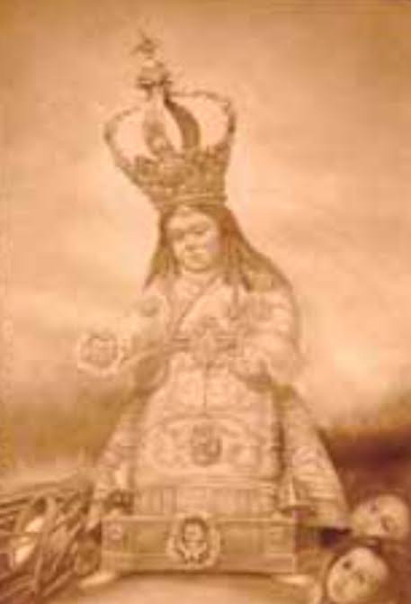
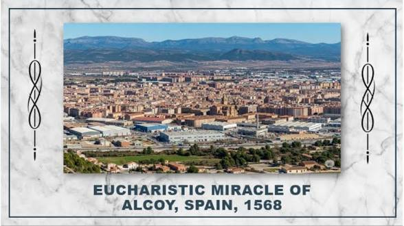
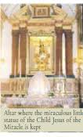

The 1568 Eucharistic miracle of Alcoy, Spain, occurred when a statue of the Child Jesus miraculously guided the faithful to the location of stolen, consecrated Hosts, which then reappeared despite having been consumed by a thief.
After a thief stole three consecrated Hosts and consumed them, a pious widow prayed before a statue of the Child Jesus. The statue miraculously moved its hand to point toward the thief's house. When searchers found the hidden silver box where the Hosts had been kept, the three Hosts appeared inside it perfectly intact, despite the thief's confession that he had already consumed them.
The thief, Juan Prats, deeply repented and confessed his crime. His home was later converted into an oratory. The event is annually commemorated in Alcoy during the Feast of Corpus Christi and is officially recognized in the international exhibition curated by Blessed Carlo Acutis.